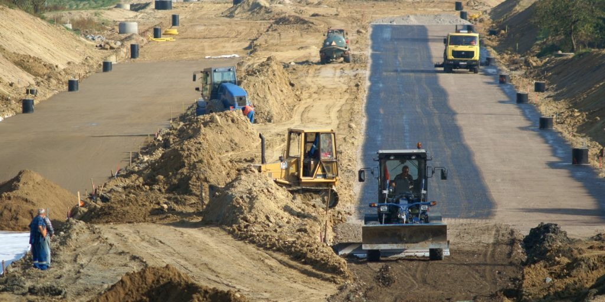
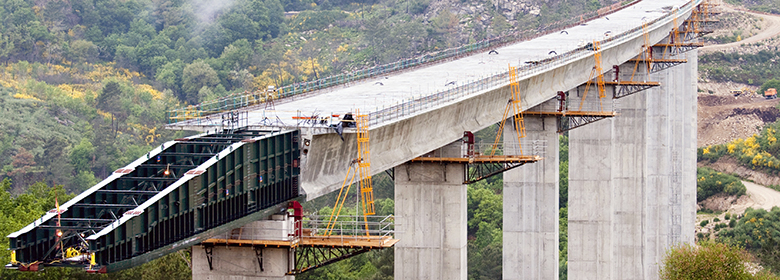

La construcción de carreteras implica varias etapas: planificación, diseño, nivelación del terreno, colocación de capas de base y finalmente el asfaltado. Se utilizan maquinaria pesada como excavadoras, niveladoras y pavimentadoras para garantizar una vía segura y duradera.
Los puentes requieren un análisis más complejo debido a su función de conectar puntos separados por obstáculos naturales como ríos o valles. Se consideran factores como la resistencia de materiales, la carga esperada y el tipo de terreno. Los ingenieros civiles utilizan concreto, acero y técnicas avanzadas para construir puentes resistentes y seguros.
Las carreteras y puentes son esenciales para el desarrollo económico y social. Facilitan el transporte, el comercio y la comunicación entre regiones, mejorando la calidad de vida y fomentando el crecimiento regional.